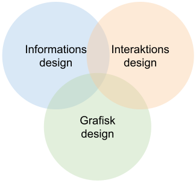

Web design
Hvad er web design.
Når man arbejder med web design, indgår der mange forskellige fagligheder og discipliner. Arbejdet beskæftiger sig således med områder som ’informations design’, ’interaktions design’ og ’grafisk design’.
Informations design
Når vi skal lave et website skal man selvfølgelig vide hvad man vil sige på sitet – med andre ord hvad skal indholdet være. Men ligeså snart dette ligger klart er det og vigtigt at forholde sig hvad der så skal stå hvor! Et website består jo af flere sider (webpages), der organiserer indholdet på en hensigtsmæssig måde, så det bliver tydeligt og let for brugeren af finde det ønskede indhold.
Dette betyder at vi er nød til at planlægge detaljeret hvilke oplysninger (og andre elementer som knapper og billeder) vi vil have fordelt på hvilke sider. Det handler om at skabe en tydelig og meningsfuld opdeling af stoffet.
Interaktions design
Ligeså vigtigt det er at lave en god opdeling af stoffet på de enkelte sider, ligeså vigtigt er det også at vores brugere kan finde det de leder efter! Det handler i bund og grund om at gøre sit site så brugbart og nyttigt som muligt. Jakob Nielsen [1] har fremsat disse 5 kvalitets komponenter man bør holde øje med:
- Learnability: How easy is it for users to accomplish basic tasks the first time they encounter the design?
- Efficiency: Once users have learned the design, how quickly can they perform tasks?
- Memorability: When users return to the design after a period of not using it, how easily can they reestablish proficiency?
- Errors: How many errors do users make, how severe are these errors, and how easily can they recover from the errors?
- Satisfaction: How pleasant is it to use the design?
Grafisk design
Det siger måske sig selv at grafisk design handler om det visuelle udseende af siderne. Det er dog sjældent så ligetil at lave et godt grafisk design, som man måske først kunne tro. At lave et godt grafisk design handler om at tilpasse sitets udseende så det taler til modtagerens øjne på en måde der både bidrager konstruktivt til sitets budskab, og samtidig giver en god æstetisk oplevelse. Et af mange redskaber til dette er gestaltreglerne der bygger på hvordan vores hjerne ser helheder i stedet for detaljer. De mest almindeligt forekommende gestaltregler er:
- Nærhed (proximity). Figurer der er placeret tæt på hinanden ses som en gruppe.
- Lighed (similarity invarians). Ens figurer opfattes som en gruppe.
- Lukkethed (closure). Delelementer af et billede stykkes sammen til at skabe helheden.
- Kontinuitet og symmetri. Optræder to figurer symmetriske omkring en linje, ses de som en gruppe.
- Prægnans (Prägnanz) – figur/baggrund. Hjernen leder efter mønstre, kontinuitet, ensartethed.
- Erfaring (Past experience, “Common Fate”). Dækker bl.a. over brugen af ikoner
- Forbundethed – Forbindes figurer med en streg, opfattes de umiddelbart som sammenhørende (forbundenhed er et design tips – ikke en gestaltlov).
Værktøjer og teknologier.
Alle kan relativt nemt komme i gang med at lave funktionelle og æstetiske hjemmesider takket være de åbne standarder for HTML og CSS. Begge sprog grundlæggende for produktionen af hjemmesider, og bliver administreret af ’world wide web consortium’ (www.w3c.org).
HTML
HTML står for Hyper Text Markup Language, og bruges til at mærke de enkelte bestanddele af hjemmesiden op, sådan at den besøgendes browser ved hvilket element der er tale om – eksempelvis og der er tale om en overskrift, en underoverskrift, et link og så videre. Når HTML filen vises med en browser, viser den således indholdet som det er blevet opmærket, og med et standard udseende.
CSS
På moderne websites er udseendet naturligvis vigtigt. Derfor er der behov for at kunne ændre det standard udseende som browseren præsentere indholdet med. Dette gøres med sproget CSS, der står for Cascading Style Sheet. Med CSS kan du få den samme HTML fil til at se vidt forskellig ud.
Og meget mere…
Der er selvfølgelig meget mere, og mange flere teknologier der kan tages i anvendelse når man skal producere websites. Ovenstående hører dog til det allermest grundlæggende, og er noget alle der beskæftiger sig med webmediet bør have kendskab til.